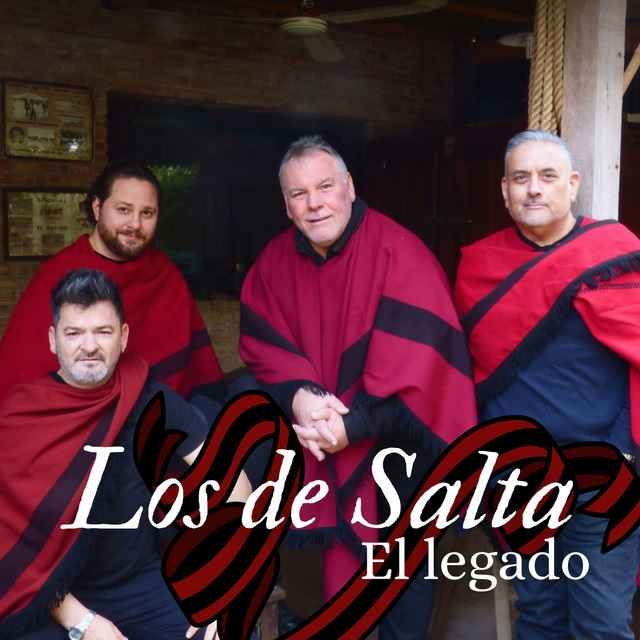

Lanzamiento discográfico
El Legado
El conjunto folklórico argentino Los de Salta lanzó su álbum titulado El Legado el 27 de septiembre de 2025.
12 canciones · Escuchá el álbum en Spotify o YouTube
LOS DE SALTA PRESENTAN
El Legado



El conjunto folklórico argentino Los de Salta lanzó su álbum titulado El Legado el 27 de septiembre de 2025.
12 canciones · Escuchá el álbum en Spotify o YouTube
